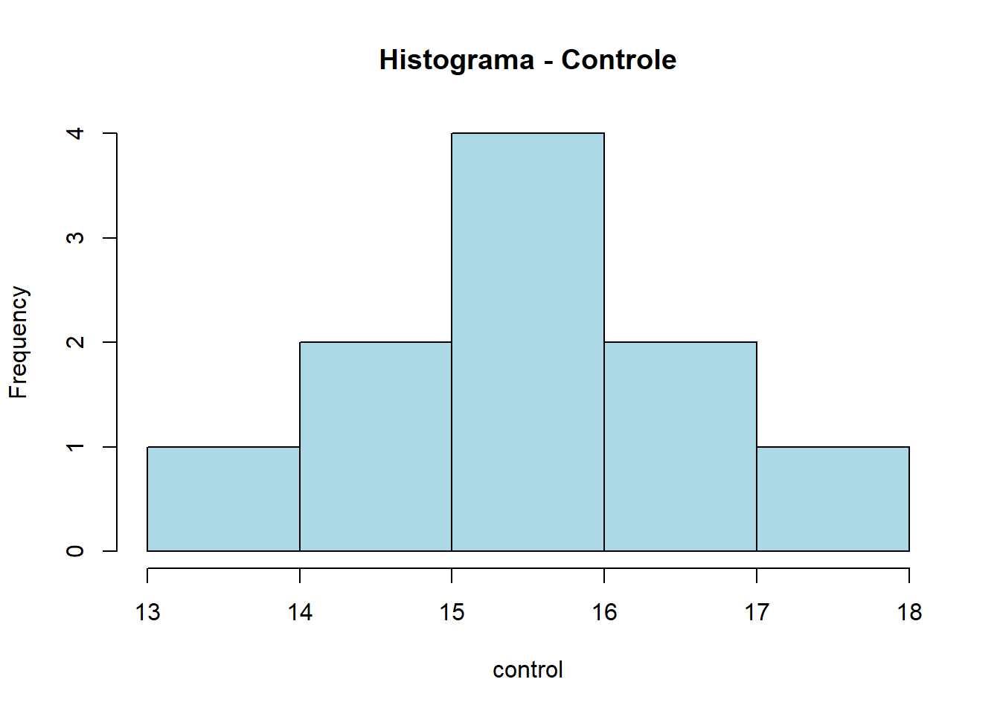
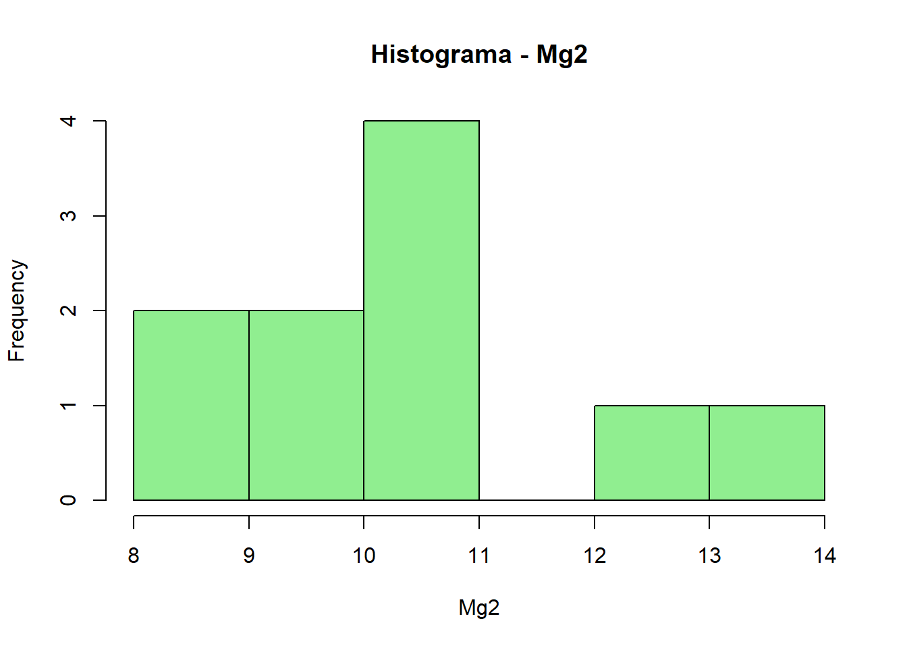

Vamos testar a normalidade dos dados, o que é essencial para aplicar testes paramétricos como o teste t. Para isso, são utilizados o teste de Shapiro-Wilk (shapiro.test) e histogramas (hist) com o objetivo de verificar a distribuição das variáveis. Também vamos avaliar a homogeneidade de variâncias com o var.test, outra premissa para o uso de testes t.
Vamos começar importando e explorando os dados que serão analisados:
Welch Two Sample t-test
data: control and Mg2
t = 8.1549, df = 17.354, p-value = 2.423e-07
alternative hypothesis: true difference in means is not equal to 0
95 percent confidence interval:
3.825607 6.490393
sample estimates:
mean of x mean of y
15.678 10.520
#Com o attach(), o R passa a reconhecer diretamente as colunas control e Mg2 sem usar o $attach(dat_mg2)t_results <-t.test(control, Mg2)library(report)report(t_results)
Effect sizes were labelled following Cohen's (1988) recommendations.
The Welch Two Sample t-test testing the difference between control and Mg2
(mean of x = 15.68, mean of y = 10.52) suggests that the effect is positive,
statistically significant, and large (difference = 5.16, 95% CI [3.83, 6.49],
t(17.35) = 8.15, p < .001; Cohen's d = 3.65, 95% CI [2.14, 5.12])
library(rstatix)t_test(comp ~ trat, data = dat_mg)
library(ggpubr)p <-ggboxplot( dat_mg, x ="trat", y ="comp",color ="trat", palette ="jco") +ylim(0, 20)
shapiro.test(control) # para o grupo controle
Shapiro-Wilk normality test
data: control
W = 0.93886, p-value = 0.5404
shapiro.test(Mg2) # para o grupo magnésio
Shapiro-Wilk normality test
data: Mg2
W = 0.97269, p-value = 0.9146
hist(control, main ="Histograma - Controle", col ="lightblue")

hist(Mg2, main ="Histograma - Mg2", col ="lightgreen")

var.test(control, Mg2)
F test to compare two variances
data: control and Mg2
F = 0.67654, num df = 9, denom df = 9, p-value = 0.5698
alternative hypothesis: true ratio of variances is not equal to 1
95 percent confidence interval:
0.1680428 2.7237436
sample estimates:
ratio of variances
0.6765394
#Premissar para usar o teste T: Testar normalidade e variância homogêneas
No teste de Shapiro-Wilk o p > 0.05, logo os dados podem ser considerados normais.
No var.test o valor p > 0.05, logo as variâncias são homogêneas.
Teste t amostras dependentes
Vamos analisar o conjunto de dados “escala” e realizar o teste t pareado com t_test para comparar a acurácia entre dois métodos de avaliação. Os dados são visualizados com geom_boxplot e os grupos são filtrados para aplicar o teste de normalidade separadamente em cada um. Caso os dados não sejam normais, utiliza-se o teste de Wilcoxon (wilcox.test), equivalente não paramétrico ao teste t.
# Carregar pacote necessáriolibrary(readxl)library(dplyr)library(ggplot2)library(rstatix) # Para a função t_test()# Ler os dados da aba 'escala'escala <-read_excel("dados-diversos.xlsx", sheet ="escala")# Teste t para amostras pareadas (acurácia entre avaliações)t_test(acuracia ~ assessment, data = escala,paired =TRUE,var.equal =FALSE)
F test to compare two variances
data: unaided and aided
F = 20.879, num df = 9, denom df = 9, p-value = 0.0001082
alternative hypothesis: true ratio of variances is not equal to 1
95 percent confidence interval:
5.186134 84.060116
sample estimates:
ratio of variances
20.87934
Verificar distribuição e variância
hist(unaided)
shapiro.test(unaided)
Shapiro-Wilk normality test
data: unaided
W = 0.77356, p-value = 0.00691
shapiro.test(aided)
Shapiro-Wilk normality test
data: aided
W = 0.92775, p-value = 0.4261
Neste conjunto de análises, buscou-se avaliar o efeito de diferentes métodos de avaliação sobre a acurácia de observações utilizando dados provenientes da planilha “escala”. Inicialmente, realizou-se a verificação das premissas para aplicação do teste t pareado, incluindo a avaliação da normalidade dos dados por meio do teste de Shapiro-Wilk e a homogeneidade de variâncias via var.test().
Em seguida, foi aplicado o teste t para amostras dependentes (pareadas), comparando a acurácia das avaliações “Unaided” e “Aided1”. Os dados foram visualizados por meio de boxplots, permitindo observar graficamente a distribuição das acurácias em cada condição. Também foram utilizados métodos alternativos de teste, como o t_test() do pacote rstatix e report() para a interpretação estatística dos resultados.
Além disso, cuidados foram tomados quanto à padronização de nomes de categorias da variável assessment, uma vez que diferenças de capitalização e possíveis espaços em branco poderiam comprometer a correta filtragem dos dados. Esse aspecto evidenciou a importância da limpeza e padronização das variáveis categóricas para garantir a robustez e confiabilidade dos testes estatísticos subsequentes.
De forma geral, os procedimentos realizados permitiram comparar de maneira apropriada os métodos avaliativos utilizados, fornecendo evidências quantitativas para apoiar a tomada de decisão quanto à acurácia das observações analisadas.
Teste equivalente ao t para dados não normais (Wilcoxn) de amostras pareadas
O teste de Wilcoxon para amostras pareadas é uma alternativa não paramétrica ao teste t pareado, utilizado quando os dados não seguem distribuição normal. Ele compara duas medições feitas nos mesmos indivíduos, avaliando se há diferença significativa entre elas. Em vez de usar médias e desvios padrão, ele trabalha com os sinais e ranks das diferenças entre os pares. É ideal para dados dependentes e não normais.
wilcox.test(unaided, aided)
Wilcoxon rank sum exact test
data: unaided and aided
W = 0, p-value = 1.083e-05
alternative hypothesis: true location shift is not equal to 0
p-value = 1.083e-05 => Rejeitamos a hipótese nula
Como o valor de W foi 0, é um sinal fortíssimo de que os dados de um grupo (provavelmente aided) foram sistematicamente maiores que os do outro. Portanto, o auxílio teve efeito real nos resultados — e não foi coincidência.
Praticando os conhecimentos
Vamos praticar os conceitos aprendidos para comparar a taxa de crescimento micelial entre diferentes espécies de fungos da planilha “micelial”. Para isso, vamos começar realizando uma ANOVA. As premissas são verificadas com histogramas, shapiro.test, e testes de homogeneidade (Bartlett e Levene). As médias são comparadas com emmeans, cld e pwpm, fornecendo uma interpretação mais detalhada das diferenças.
especie emmean SE df lower.CL upper.CL .group
Fgra 0.912 0.0559 25 0.797 1.03 1
Faus 1.237 0.0559 25 1.122 1.35 2
Fcor 1.322 0.0559 25 1.207 1.44 2
Fmer 1.427 0.0559 25 1.312 1.54 23
Fasi 1.572 0.0559 25 1.457 1.69 3
Confidence level used: 0.95
P value adjustment: tukey method for comparing a family of 5 estimates
significance level used: alpha = 0.05
NOTE: If two or more means share the same grouping symbol,
then we cannot show them to be different.
But we also did not show them to be the same.